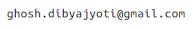

The information on this page was last updated on 27th September 2018.
Assistant Professor,
Department of English,
Ananda Mohan College, University of Calcutta
Kolkata, India

My name in IPA: d̪ ɪ b b oʊ dʒ oʊ t̪ i ghoʊʃ
(Phonetic spelling: (soft D) IB--BOW--JOE--(soft T) EA)
(Audio file)
If you are confused by my first name, I am male!
ORCID: https://orcid.org/0000-0001-5395-7357
Twitter: https://twitter.com/dibyajyotigee